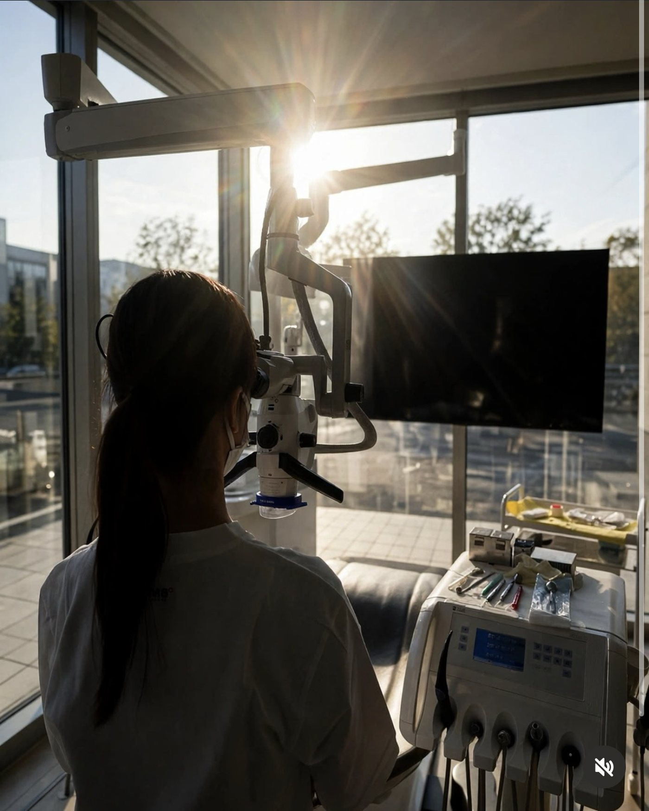

医院の中だけでは、学べないことがある。
臨床の質を上げ、世界とつながり、キャリアの選択肢を広げる。歯科衛生士のためのコミュニティ。
2027年1月スタート／第1期メンバー100名・募集準備中
Overview
大きくしないことを、先に決めています。
Why
セミナーは山ほどある。動画も無料で見られる。それでも月曜のアポに戻ると、今までと同じことをしている。
足りないのは知識じゃない。
基準をずらす体験と、
それを一緒に通る人。
What is WING
WINGは英語で「翼」。一人ひとりが自分らしく学んで、羽ばたいていける場所をつくります。
臨床で活きる学び
毎月のゲスト講師セッション。歯周病・矯正・小児・インプラント・外科まで、第一線の人から「なぜそうするのか」を学び、その場でワークまでやります。
世界とつながる学び
アメリカ・フランス・オランダ・スウェーデン。現地で働くDHと直接つながり、日本の「当たり前」を外から見直す。
広がるキャリアの選択肢
チェアサイドの先にある道を知る。認定、企業、教育、発信、海外。実際にその道にいる人から、お金と時間のリアルごと聞く。
Monthly Loop
月1回、90分。ゲスト講師の講義で終わらせず、その場でワークまでやります。自分が動く側に回る場所です。
その領域の第一線の人が、手順ではなく考え方から話します。
質問は事前に会員から集めます。聞きにくいことほど、代わりに聞きます。
自分の患者に当てはめて手を動かします。聞いて終わる回は、1回もありません。
班で報告し合います。うまくいかなかった話の方が、価値があります。
100人の部屋では、誰も発言しません。入会時に5〜6人の班に配属され、月に一度はその班で集まります。顔と名前が一致する人が5人いる。それだけで、続く理由になります。
Line-up
足元から始めて、4ヶ月かけて世界に出る。順番そのものに意味があります。
| 時期 | テーマ | 柱 |
|---|---|---|
| 2027.1 | OHI & TBI — 毎日やっているのに、誰にも習っていない無料公開 | EDUCATION |
| 2027.2 | 歯周病 — 認定への道と、その前にやるべきこと | EDUCATION |
| 2027.3 | ドクター — Drは、DHのどこを見て評価しているのか | EDUCATION |
| 2027.4 | スウェーデン — 予防の本場では、DHが何をしているのか | GLOBAL |
| 2027.5 | オランダ — 予防が制度として回っている国の中身 | GLOBAL |
| 2027.7 | フランス — ヨーロッパのDH教育と資格 | GLOBAL |
| 2027.8 | 矯正 — DHが関われる範囲は、思っているより広い | EDUCATION |
| 2027.9 | 小児 — 予防のはじまりを、どう設計するか | EDUCATION |
| 2027.10 | インプラント／外科 — メインテナンスの責任範囲 | EDUCATION |
| 2027.11 | アメリカ — DHのキャリアと収入が、最も開いている国 | CAREER |
| 2027.12 | 企業 — チェアサイド以外の働き方を知る | CAREER |
| 2028.1 | SNS・発信 — 自分の学びを、仕事につなげる | CAREER |
テーマ・ゲストは変更になる場合があります。最新情報はLINEでご案内します。
Global Program ／ 第1期
予防歯科の本場で、
現地のDHを見る。
予防が制度として成立している国で、DHがどんな裁量を持ち、どんな基準で患者を見ているのか。資料ではなく、実際のチェアサイドで。全行程に通訳が入るので、英語に自信がなくても参加できます。
帰国後に自院で何を変えるかまでを、現地で言語化して持ち帰る。参加者同士は帰国後もWINGの中でつながり続けるので、「やってみてどうだったか」を報告し合えます。
Annual
WING SUMMIT。オンラインで一年一緒に学んだ人と、はじめて顔を合わせる日。スウェーデンに行ったメンバーが、その場で報告します。
自分の担当患者を、院の外の目で見てもらう。普段はもらえないフィードバックが、一番の持ち帰りになります。
少人数のハンズオン枠を併設。オンラインでは埋まらない部分だけに、時間を使います。
同じ悩みを持つ人が全国から集まる一日。ここで出会った人と、翌年の海外研修に一緒に行く人もいます。
Membership
「動画が見られる権利」ではありません。毎月自分が動き、年に一度は大きな一歩を踏み出す。そのための場所なので、人数に上限があります。
在籍中も、一度卒業して戻るときも、この価格のまま。
Founding Member 価格の年払い。月払いより2ヶ月分おトク。
興味のある回だけ参加できます（90分・ワーク込み）。
単発 ¥5,500 − 会員 ¥2,980
1回参加した時点で会員の方が得になり、そのまま残りの11回とアーカイブ、研修の割引が付いてきます。そして班と月末の持ち寄りは、単発では入れません。
会員と非会員の差は、
値段ではなく中身です。
For whom
合わない人に入ってもらっても、お互いに損をします。先に書いておきます。
Philosophy
WINGは英語で「翼」。もっと学びたい。もっと視野を広げたい。新しい世界を見てみたい。その気持ちに、場所をつくりたかった。
可能性は、自分が思っているよりずっと広い。
そんな気持ちがあっても、なかなか一歩を踏み出せなかったり、自分には無理かもって思ってしまうことがある。
だからこそ、ここが新しいことを知るきっかけになったり、一歩踏み出す勇気につながったり。一人ひとりが自分らしく学んで、可能性を広げて羽ばたいていける。そんな場所になったら嬉しいです。
WINGは、誰か一人が正解を配る場所ではありません。毎月のゲスト、班のメンバー、実践会の相手。学びの相手は一人ではなく、同じ臨床に立つ全員です。
Instagram：@wing_dh
Q&A
ここに無いことは、LINEで直接聞いてください。
あります。全回アーカイブが残り、会員はいつでも見られます。質問も事前に受け付けて対談パートで取り上げます。ワークは課題として残るので、自分のペースでやって月末の持ち寄りに出せば、ループは成立します。
大丈夫です。1月のOHI & TBIのように、経験年数に関係なく全員が毎日やっていることから始めます。むしろ早い段階で外の基準に触れた方が、自己流が固まる前に修正できます。
オンラインの海外ゲスト回は通訳または日本語の解説を入れます。スウェーデン研修も全行程に通訳が入ります。
2027年6月のスウェーデン研修に間に合わせるためです。1月から毎月のループを回し、6月に第1期が現地に立つ。この流れに最初から乗れるのは、いまの100名だけです。2期の募集は、第1期が一巡したあとになります。
実践会と班（Pod）を機能させるには、運営側が一人ひとりを把握できる人数に収める必要があるからです。人数を増やせば売上は伸びますが、発言しない人が増えて場が死にます。第1期は100名で締め切り、以降はウェイトリストでのご案内になります。
できます。月単位でいつでも、フォームから1分で完了します。引き止めのご連絡は一切しません。理由の記入も任意です。WINGは一生いる場所ではないので、必要がなくなったら卒業するのが正しい使い方だと思っています。
休会ができます。課金を止めたまま在籍を残せるので、落ち着いてから戻れます。班のメンバーにもその旨が共有されるので、黙って消えたことにはなりません。
入れます。Founding Member の価格は、卒業後に戻るときも同じです（定員に空きがある場合）。価格で縛ることはしません。卒業後もSUMMITなどのイベントは卒業生価格でご案内します。
参加できます。ただし会員は5万円割引と先行申込の対象になります。少人数制のため、会員優先で枠が埋まる可能性があります。
問題ありません。個人での参加が前提です。コミュニティ内の症例相談も、患者情報を特定できない形でのやり取りをルールにしています。
Perio Labは歯周病認定歯科衛生士の取得を目的とした講座で、ゴールが明確に決まっています。WINGはもっと広く、日々の臨床から海外・キャリアまでを扱う、終わりのない場です。Perio Lab修了生の方には、WING CLUBのご案内を別途しています。
Join
第1期メンバーの募集開始、スウェーデン研修の詳細、毎月のセッションスケジュールは、Instagram（@wing_dh）とLINEで先行してご案内します。どちらも登録は無料です。
1月の第1回ライブ（OHI & TBI）は、登録者の方は無料でご参加いただけます。